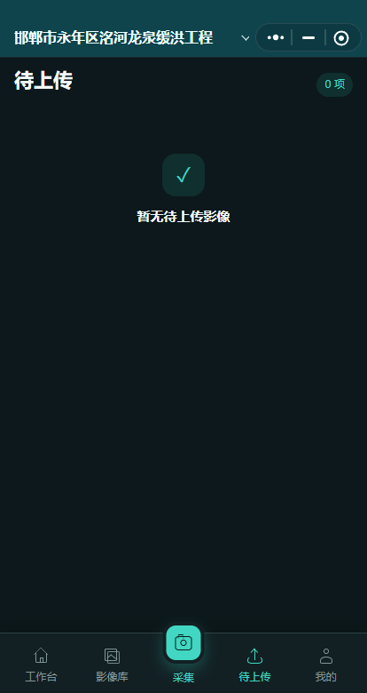

登录账号
打开桌面软件，使用注册时的账号和登录密码进入。新用户点“注册”会打开官网注册页；注册完成后回到软件登录。
登录密码用于账号登录，工程删除密码用于删除照片、单元或工程，两者用途不同。
这些步骤决定后面的照片会进入哪个工程、单元和编号序列。
打开桌面软件，使用注册时的账号和登录密码进入。新用户点“注册”会打开官网注册页；注册完成后回到软件登录。
点击顶部工程选择器右侧的“＋”，填写工程名称、专业、类型和归档地区，并设置该工程自己的删除密码。
进入“设置 → 项目划分”，先下载 Excel 模板。每个单元工程单独占一行，填写合同工程、单位工程、分部工程、单元工程的名称和编码，再选择文件导入。
导入后查看左侧目录，按“单位工程 → 分部工程 → 单元工程”逐级核对。点击顶部工程名称可以展开全部工程并切换。
进入“设置 → 上传与匹配 → 编号规则”，分别设置施工单元、施工工序、监理单元、监理工序的编号格式、起始号和流水位数。
选择一个单元，上传一张测试照片，检查工程、类别、工序、题名、拍摄者、日期和编号是否正确，再开始批量上传或邀请现场人员。
电脑端负责工程结构、集中整理、人员管理和正式交付。
顶部下拉框列出全部工程。切换后项目划分、照片、成员、设置和同步状态一并切换。
在左侧目录进入单元，施工和监理分别管理；需要细分时，在单元内添加工序。
单张或批量上传前确认目标。文件夹导入会识别水印并给出候选，无法识别的照片进入“待分类影像”。
可打印当前单元、勾选照片或批量工程影像，并导出照片统计表、ZIP 和工程资料包。
打开照片可修改题名、拍摄日期、拍摄者、描述、方向和所属工序。移动到其他单元前要再次确认目标。
删除照片、单元、项目划分或整个工程时，按提示输入当前工程的删除密码。工程删除会先保留可恢复备份。
主账号在“设置 → 项目成员”生成邀请码、查看申请、调整角色或移出成员。受邀人只能访问已批准的项目。
免费账号可绑定 1 个小程序项目，月费会员最多 2 个，终身会员最多 3 个。额度内切换项目不限制上传，项目资料始终隔离。
小程序使用电脑已同步的工程、项目划分和成员权限。现场拍摄先保存在本机队列，网络恢复后可以继续上传。


主账号直接登录；受邀人通过长期邀请码提交姓名和手机号，分享人审批后进入。
施工单位、企业图标和拍摄者等固定内容由项目负责人设置一次，后续拍照自动带入。
选择单位工程、分部工程、单元工程和工序；相机内直接查看并编辑水印。
检查水印、日期、地点和照片信息后保存；进入队列后可查看进度、重试或移除照片。
每个工程保存自己的合同、单位、分部、单元和工序结构。
待上传、已上传、待分类和删除记录按账号、电脑和项目分别保存。
编号、水印、打印、照片字段、施工单位和成员不会串到其他工程。
只有主账号的会员资格可以在额度内共用；受邀人权限仍只属于获批的项目。
软件首次登录会显示同样的六步操作提示，完成后不再重复打扰。